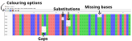

4 Multiple Sequence Alignment
- Recognise the use of sequence alignments in phylogenetics.
- Understand what is a sequence alignment and how to estimate one.
- Distinguish between pairwise and multiple sequence alignment (MSA).
- Recognise the advantages and limitations of commonly used software for MSA.
- Perform and visualise MSA on a set of DNA or protein sequences.
4.1 Sequence Alignment
In molecular phylogenetics we use sequence data to infer trees. However, we first need to perform sequence alignment, so that homologous residues across the sequences are matched to each other. This is because homologous sequences across individuals/species can be of different lengths due to insertions/deletions. Therefore, without first aligning those sequences, it would be hard to infer the evolutionary patterns of change and reconstruct which substitutions occurred where.
In essence, an alignment is a matrix containing one sequence per row. The rows of that matrix correspond to each sequence, and the columns to each residue (an aminoacid for protein sequences or a nucleotide for DNA sequences). To make the rows/sequences in the matrix of the same length, we add gap - characters. However, we can’t arbitrarily assign gap characters when performing sequence alignment, as this could lead to very inaccurate trees.
For example, say we have sequences
ATCG
CGwhile this might be a reasonable alignment
ATCG
--CGthis one is typically much more unlikely
A-TCG
-CG--Alignment methods are usually guided by one of two principles:
- Evolutionary alignments want to place homologous characters in the same alignment column. Characters are homologous if they descended from the same ancestral character: while they might have been substituted with different characters, they have not been inserted. This is usually the same assumption made by phylogenetic methods when interpreting an alignment.
- Structural alignments want similar characters to be in the same column, so it makes sense that two characters are in the same column even if they are not homologous, but if they have similar functions within the sequence.
An evolutionary alignment represents an inference regarding the evolutionary sequence of the considered species, in particular regarding insertions and deletions. Phylogenetic inference methods usually don’t use insertion and deletion events to infer the tree, but they still assume that characters in the same alignment column are homologous.
The main file format used to store nucleotide or amino acid sequences is called FASTA. The general structure of a FASTA file is illustrated below:
>sample01 <-- NAME OF THE SEQUENCE
AGCGTGTACTGTGCATGTCGATG <-- SEQUENCE ITSELFEach sequence is represented by a name, which always starts with the character >, followed by the actual sequence.
A FASTA file can contain several sequences, for example:
>sample01
AGCGTGTACTGTGCATGTCGATG
>sample02
AGCGTGTACTGTGCATGTCGATGEach sequence can sometimes span multiple lines, and separate sequences can always be identified by the > character. For example, this contains the same sequences as above:
>sample01 <-- FIRST SEQUENCE STARTS HERE
AGCGTGTACTGT
GCATGTCGATG
>sample02 <-- SECOND SEQUENCE STARTS HERE
AGCGTGTACTGT
GCATGTCGATGA useful trick to use on the command line is to count how many sequences there are in a FASTA file. Since each sequence name always starts with > character, if we count the lines containing that character, that’s equivalent to counting how many sequences there are in the file. This can be achieved with the grep command:
grep -c ">" sequences.fa4.2 Alignment Inference
The simplest type of alignment is where only two sequences are aligned to each other, which we refer to as pairwise alignment. This is usually done using a dynamic programming algorithm, such as a the Needleman-Wunsch algorithm (or a variation thereof).
However, in most phylogenetic applications, we work with more than two sequences, in which case we need to perform a multiple sequence alignment (MSA). Although the dynamic programming methods used for pairwise alignments can be generalised for multiple sequences, this is nonetheless a more computationally complex process. The computational challenge is greater, in particular, as we work with more and longer sequences (e.g. aligning millions of viral genomes, as was the case in the SARS-CoV-2/Covid19 pandemic).
There are several methods to address the complexity of MSA. One common heuristic strategy to solve this challenge is to use a method known as progressive alignment:
- A guide tree is built from the sequences by using a simple clustering algorithm based on their sequence similarity (e.g. based on the number of shared sub-sequences). Note that this tree is not evolutionarily meaningful, its main purpose is to identify which sequences are more similar and therefore easier to align to each other.
- After the clustering step, the pair of sequences that is most similar (based on the guide tree) are aligned using a pairwise alignment algorithm. From this step on, the two aligned sequences are treated as one sequence (i.e. any gaps between them are treated as “fixed”).
- This previous step is then repeated until all sequences are added to the final MSA.
One limitation of progressive alignment methods is that if an error occurs early in the alignment, this will affect the quality of the final MSA. To overcome this limitation, a strategy known as iterative alignment was developed. In this case, rather than considering alignments from previous steps of the algorithm as “fixed”, sequences can instead be re-aligned to improve the overall alignment score.
Finally, it is noteworthy to mention phylogeny-aware algorithms. Most other methods heavily penalise gap insertions, which is desirable to avoid unecessarily complicated alignments, as exemplified earlier. However, this penalty may lead to incorrect alignments, as it ignores the evolutionary history of deletions and insertions between the samples being analysed. While for many applications this should not be a problem, if the purpose of the study is the inference of selection (e.g. estimating the rate between synonymous and non-synonymous mutations in protein-coding gene alignments), then mis-aligned sequences can lead to falsely infer positive selection due to overalignment. The tradeoff is that this is a substantially slower algorithm.
4.3 MSA Software
There are many alignment software available, summarised in the table below. At short divergence, these typically give similar results. However, with highly divergent sequences, alignments can be very different between methods.
| Software | Algorithm Type | Main Uses |
|---|---|---|
| Clustal | progressive | A popular and common algorithm, but mostly superseeded by more recent alternatives. |
| T-Coffee | progressive | Slower but more accurate than Clustal. |
| MAFFT | iterative/progressive | Offers several algorithms, with tradeoffs between accuracy and speed. |
| MUSCLE | iterative | Comparative accuracy to MAFFT. |
| PRANK | phylogeny-aware | Suitable for the inference of selection. |
4.3.1 MAFFT
There is no clear consensus on which software is best, although MAFFT offers a good compromise between accuracy and speed (see their benchmarks). This is partially because MAFFT offers the possibility of using different algorithms, including faster (but less accurate) progressive alignment methods, as well as more accurate (but slower) iterative methods.
The simplest use of the MAFFT program is as follows:
mafft --auto input.fasta > output.fastaThe --auto option lets MAFFT choose which of its algorithms to use, depending on the number and length of your sequences. If you want to use a specific algorithm, you can use different combinations of its options, as detailed in the manual page.
4.3.2 PRANK
Another noteworthy software is PRANK, which implements a phylogeny-aware algorithm. Although slower than most methods, we would recommend using PRANK if the purpose of your study is to make inferences about selection pressures on coding sequences. The PRANK program can be used as:
prank -d=input.fasta -o=outputThere are many other options that can be used with this program, which you can look at from its online documentation and help (prank -help).
4.4 Reference-based Alignment
A popular alternative to produce a MSA is to use a reference-based alignment approach. In this case each of our sequences is aligned to a “reference” sequence using a pairwise algorithm. This compulationally simplifies the problem of MSA, as we essentially reduce it to multiple pairwise alignments, without having to care about optimising the alignment across all sequences. This strategy is (much) faster than a full MSA, and is suitable when working with a large number of sequences that are not too diverged from each other (less than ~1% differences).
A popular use-case for this approach is the alignment of multiple SARS-CoV-2 viral genomes. During the Covid19 pandemic, millions of consensus genomes were obtained for this virus due to the genomic surveillance efforts of public health institutions around the world. Aligning hundreds/thousands/millions of sequences using standard MSA algorithms would be prohibitively slow. However, because these viral sequences were all closely related, a reference-based alignment was a suitable approach.
In MAFFT we can achieve this by using the --addfragments option:
mafft --keeplength --addfragments input.fasta reference.fasta > output.fastaThe meaning of the options used is:
--addfragments input.fastais the FASTA file with the sequences we want to align.- at the end of the command we give the reference genome that we want to align our sequences against.
--keeplengthis optional. It keeps the length of the final alignment the same as the reference sequence. This is useful when aligning sequences against a reference genome, where we may want to keep the original coordinates to identify regions corresponding to specific genes, for example. What this means in practice is that insertions relative to the reference sequence are simply removed from the alignment (i.e. the reference sequence remains gap-free).
Another useful option that can be used with MAFFT when aligning long sequences is --maxambiguous X, which will exclude sequences with more than X fraction of ambiguous bases (e.g. --maxambiguous 0.2 would exclude sequences with more than 20% missing bases).
See MAFFT’s tips page for more information about this approach.
4.5 Which Method?
There is no clear consensus regarding methods to “clean” alignments or to assess the confidence of different alignment regions.
One way to assess the quality of an alignment is to compare the results of multiple alignment algorithms/programs. If a region is consistently aligned in the same way using different algorithms, we may be more confident that the alignment is correct. However, if different algorithms give us different results, then we may flag that region as more problematic. The M-Coffee app, freely available online, can perform this task, by assigning a “quality” score to each alignment column based on how consistent it is across a range of programs. We will see an example of this program in the exercises.
Another way to assess the suitability of an alignment method to our data is to look at the literature to find what methods researchers in your field or application use (as we mentioned earlier for SARS-CoV-2). Alternatively, benchmark studies can provide an indication of the accuracy and speed of different algorithms (e.g. Thomson et al. 2011 and the benchmarks from the MAFFT authors).
TODO: mention the challenge in aligning repetitive/hypervariable sequences.
4.6 Protein or DNA?
Nucleotide alignments are highly informative at short divergence times, but can be misleading at higher divergence due to saturation (i.e. positions mutating back to the same base over long divergence times).
Amino acid alignments are preferred at high divergence, and can be used as a starting point to create a nucleotide alignment.
Codon alignments can be useful for coding sequences, but are more computationally demanding. One possibility to solve this challenge is to produce a protein alignment first and then reverse-complement the alignment back to its cDNA sequence. However, this approach is limited if the original cDNA sequences contain frameshift mutations or early stop codons. Instead, using a dedicated codon-aware aligner is a better approach.
The software MACSE provides this functionality, and can be used either from the command line or through a graphical user interface. A basic alignment can be done with:
macse -prog alignSequences -seq input.fasta -out_NT output_NT.fasta -out_AA output_AA.fastaThe input, in this case, is our unaligned cDNA sequences. The program then generates two outputs: the aligned nucleotide sequences and the aligned (translated) amino acid sequences. Both of these can be visualised in AliView (see below). Note that MACSE uses the special character ! to indicate that a frameshift is present in the alignment.
4.7 Alignment Visualisation
We can visualise our alignment using the software AliView, which is lightweight, fast and works on all major platforms (macOS, Linux and Windows). This makes it ideal for visualising both small and large alignments. Visualising the alignment can be useful, for example, to identify potentially mis-aligned regions (usually around indels).
Here are some quick tips for using AliView:
- You can load an alignment by going to File > Open
- You can zoom in/out of the alignment with Ctrl + mouse scroll wheel
- You can “scroll” horizontally by pressing Shift + mouse scroll wheel
- You can colour the alignment in different ways, using the buttons on the toolbar at the top

Sometimes there are missing or ambiguous data in our DNA sequences. For completely missing bases we use the character N (meaning we could have any of the 4 bases). For other ambiguous cases (where two or three bases are possible) the convention is to use the IUPAC notation. For example, a Y would represent either C or T.
4.8 Exercises
Level:
Darwin’s finches are a classic example of adaptive radiation (a quick formation of new species from a common ancestor). There are currently 18 recognised species endemic to the Galápagos Islands, and a study from Sato et al. (1999) aimed at clarifying their phylogenic relationships. To this end, they sequenced ~1kb of the mitochondrial control region (CR) from individuals from 13 species, to produce a molecular phylogeny.
However, before a phylogeny is built, we need to produce a multiple sequence alignment.
- Use MAFFT to align the sequences found in
data/finches/mitocr.fausing the algorithm of your choice. Use the--autooption to let MAFFT decide which alignment algorithm to use. Save the output intodata/finches/mitocr_alignment.fa - Answer the following questions, based on the message printed by
mafftafter finishing its run:- What algorithm was chosen?
- Looking at the help page from MAFFT (
mafft --help) and its online documentation why do you think this algorithm was chosen? - Do you agree with this choice?
- What would have made you choose a different algorithm?
- Visualise the alignment using AliView. Where there any gaps or regions you think might be problematic in this alignment?
- Run the original FASTA file though the M-Coffee app and check if your quality concerns are warranted.
Task 1
The command to produce the MSA is:
mafft --auto data/finches/mitocr.fa > results/finches/mitocr_alignment.faTask 2
After MAFFT runs, we are informed that the algorithm chosen was:
Strategy:
L-INS-i (Probably most accurate, very slow)
Iterative refinement method (<16) with LOCAL pairwise alignment informationLooking at this message and the documentation online, it seems like this is one of the most accurate algorithms using an “iterative refinement method using both the WSP and consistency scores”. The benchmarks provided by the MAFFT developers also support this as one of the most accurate methods.
Given the relatively low number of samples, and the fact that they were relatively short (~1kbp), it seems sensible to choose one of the most accurate algorithms, as speed is not a concern in this case.
From mafft --help we are told that if we have more than ~200 hundred sequences of length greater than ~2kb, then these algorithms may be too slow. Therefore, we may have chosen a different algorithm if working with more data and/or longer sequences (such as the SARS-CoV-2 samples in another exercise).
Task 3
We can visualise our alignment in AliView, which will reveal that there are some gaps, especially at the end of the alignment. This seems to be a relatively repetitive region, with streches of homopolymers (repeated nucleotides), making the alignment difficult.
Task 4
After uploading and running our FASTA file to M-Coffee, we indeed confirm that this terminal region is problematic, having overall lower agreement (score) between different alignment algorithms.

4.9 Summary
- Molecular phylogenetics typically requires aligned sequences.
- Several methods and programs are available for sequence alignment and their use depends on the type of data and applications.
- MAFFT is a general-purpose aligner, implementing both fast (but less acurate) and more accurate (but slower) algorithms.
- MAFFT also supports reference-based alignment, which is suitable when working with many sequences that are closely related to each other (less than ~1% divergence).
- PRANK is a phylogeny-aware aligner suitable for studying selection pressures on coding sequences.
- The AliView program can be used to visualise alignments stored as FASTA files.
- The M-Coffee program can be used to identify problematic regions of an alignment.